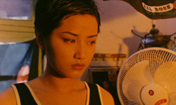
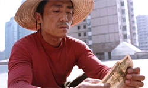
Keep Cool was a first for Zhang in many ways. Adapted from the novel "Evening Paper News" by Shu Ping, the film was his first contemporary urban movie, his first comedy and his first without Gong Li. The pinyin title 'You Huà Hao Hao Shuo' literally means 'If you have something to say, say it nicely'.
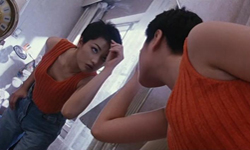
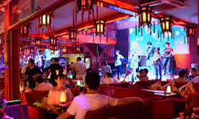
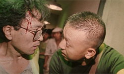
Bookseller Zhao (Jiang Wen) is following his ex-lover, An Hong (Qu Ying), not being able to accept that she has left him. His efforts are of epic proportions, and eventually he manages to impress her and earn an invitation to her apartment. However, their endeavour is interrupted in hilarious fashion. The story then shifts forward, and Zhao now tries to exact revenge from An’s new boyfriend, a nightclub owner who beat him in order to make him stop harassing his girlfriend.
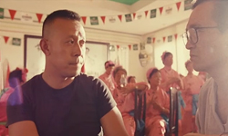
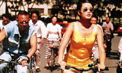
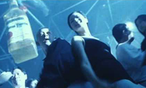
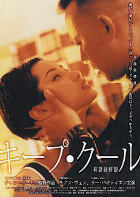
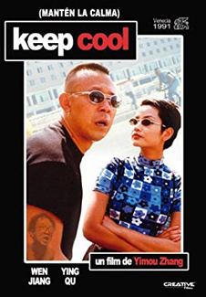
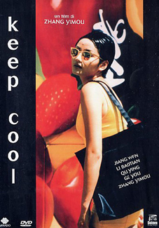
Largely different in style from the rest of Zhang's oeuvre, Keep Cool was Zhang's first urban comedy, and uses a hip, rock soundtrack and a roving handheld camera with multiple jump cuts to give a feel of contemporary Beijing. The perpetually awry camera angle expresses the chaos of the city, as well as the possibility that anything can happen: a tactic that induced it with a much faster pace than his previous works. The movie features slang, many jokes, and a wonderful performance from Jiang Wen in the role of Zhao. However, as one critic noted: "the story is without debt, the artistry is scarce, and the meaningfulness non-existent in a movie that ends up being a little more than a flick".
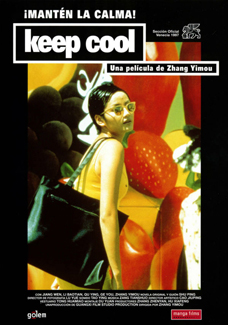
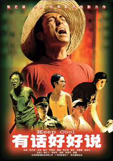
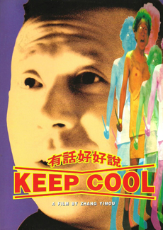